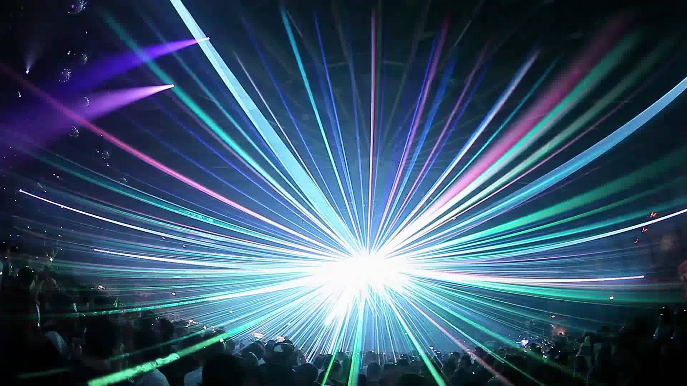
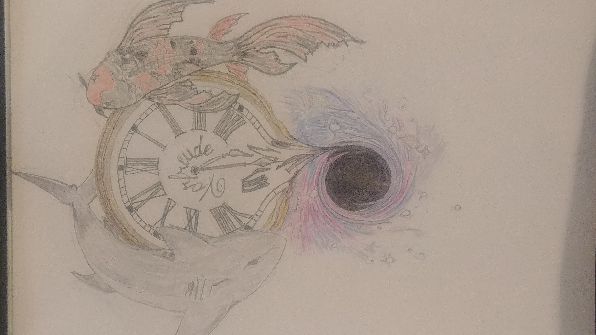

Simon Fuller

Hello, my name is Simon Fuller and I am 28 years old. Welcome to the webpage I hope you enjoy what you see. There are too many interesting subjects that I could bleed my heart out over, so I will only focus on the most important. Music drives my life. If you enjoy any style of electonic music, we can probably be friends. From the deep dark depths of techno to the emotional drones of ambient, there is an aspect of every genre that I have an attraction to. That being said, dancing and enjoying the nightlife go hand in hand with electronic music. Late nights are my strong suit. Dancing to music is a celebration of life and there is no beter place than to be safely enjoying music surrounded by your closest friends. The community is a positive loving place that breeds happiness and resepct. There is love for those that started the movement just as much as the ones that are carying it forward as we speak.
Art has been a part of my life since I was very young. I spent many of my young years doodleing and drawing. My imagination is one of my strongest assets and never stops. My day dreams are just as wild as my night dreams. What I am always looking for is a new experience. Art creates the bridge between reality and the dreamworld. Wether it be drawing, photography, filmography or any of the other branches, each one has a place in my heart. To be inspired and feel confident in following your own imagination is a gift within itself. What really makes me happy is to be able to share my dreams with people so as to give them a beautiful moment just the same as the many artists have given me. Giving back is the most incredible feeling that can not be explained with words.
